Bearing and Seal Installation
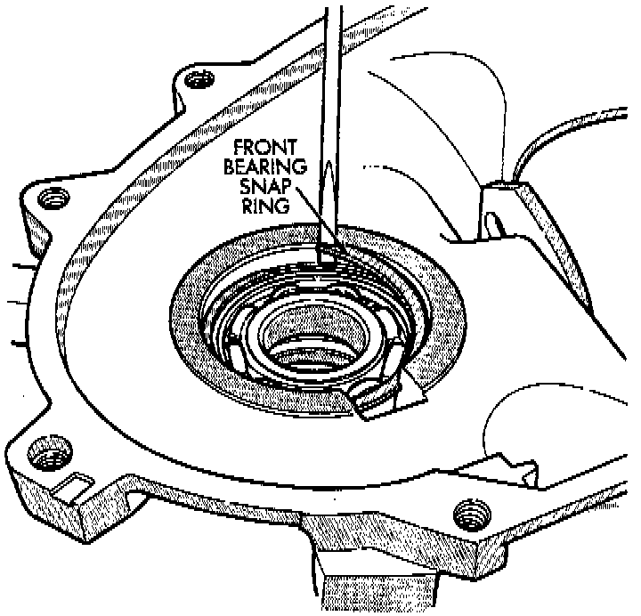
1. Remove snap-ring that retains front output shaft front bearing in case. Then remove bearing. Use hammer handle, or hammer and brass punch to tap bearing out of case.
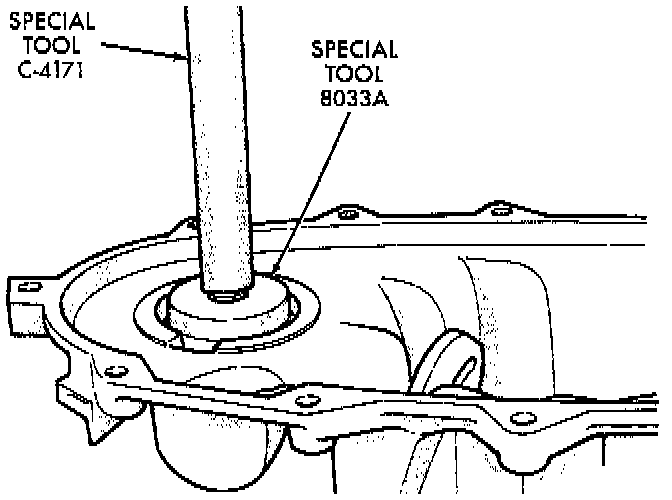
2. Install new front output shaft front bearing with Tool Handle C-4171 and Installer 8033A, or equivalents with the tapered cone upward.
3. Install front bearing snap-ring.
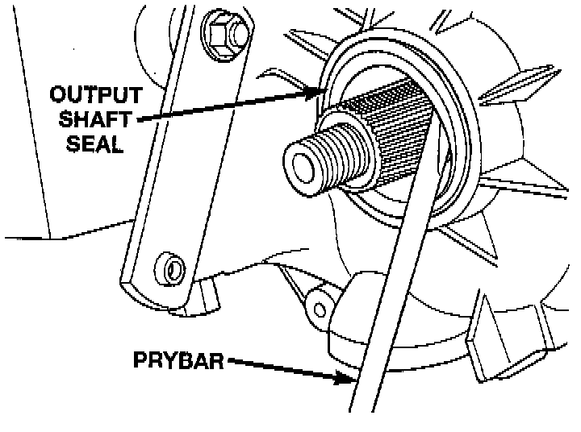
4. Remove front output shaft seal using an appropriate pry tool or slide-hammer mounted screw.
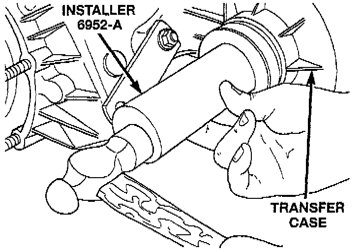
5. Install new front output shaft oil seal with Installer 6952-A, or equivalent.
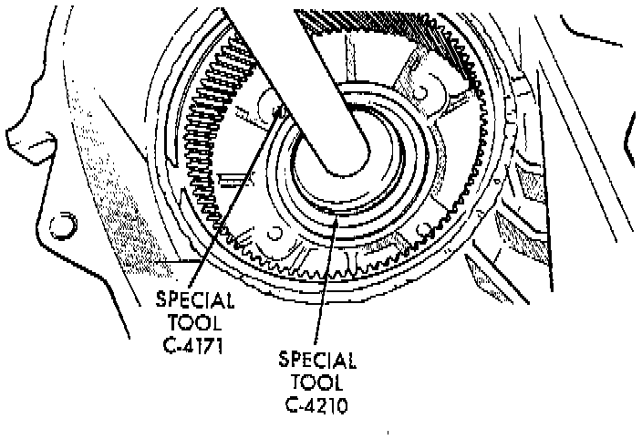
6. Remove input gear bearing with Tool Handle C-4171 and Remover C-4210, or equivalents.
7. Install snap-ring on new input gear bearing.
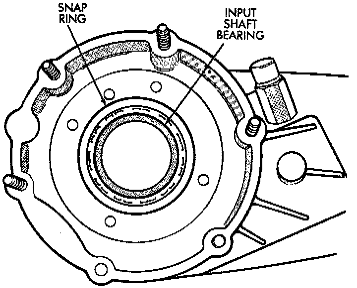
8. Install new input gear bearing with Tool Handle C-4171 and Remover C-4210, or equivalents. Install bearing far enough to seat snap-ring against case.
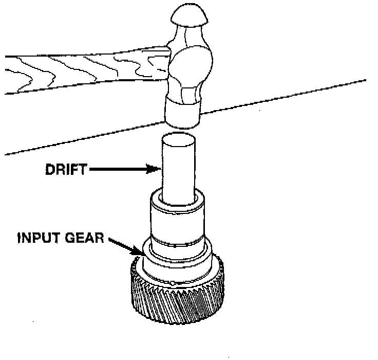
9. Remove the input gear pilot bearing by inserting a suitably sized drift into the splined end of the input gear and driving the bearing out with the drift and a hammer.
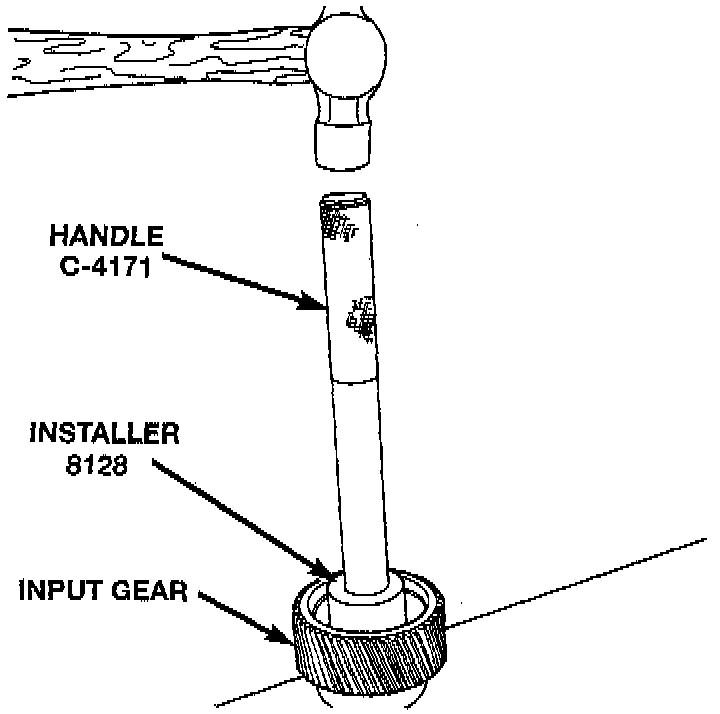
10. Install new pilot bearing with Installer 8128 and Handle C-4171, or equivalents.
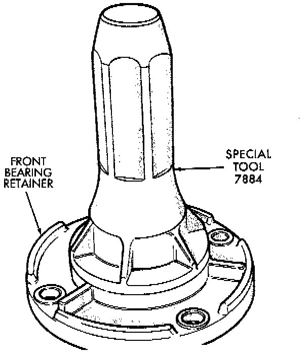
11. Install new seal in front bearing retainer with Installer 7884, or equivalent.
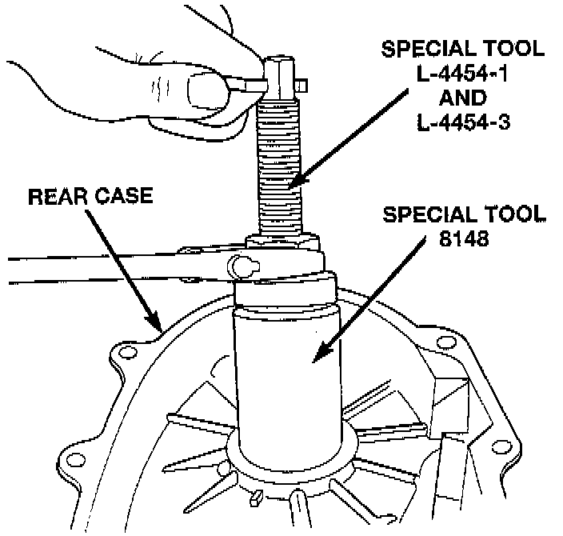
12. Remove output shaft rear bearing with the screw and jaws from Remover L-4454 and Cup 8148, or equivalents.
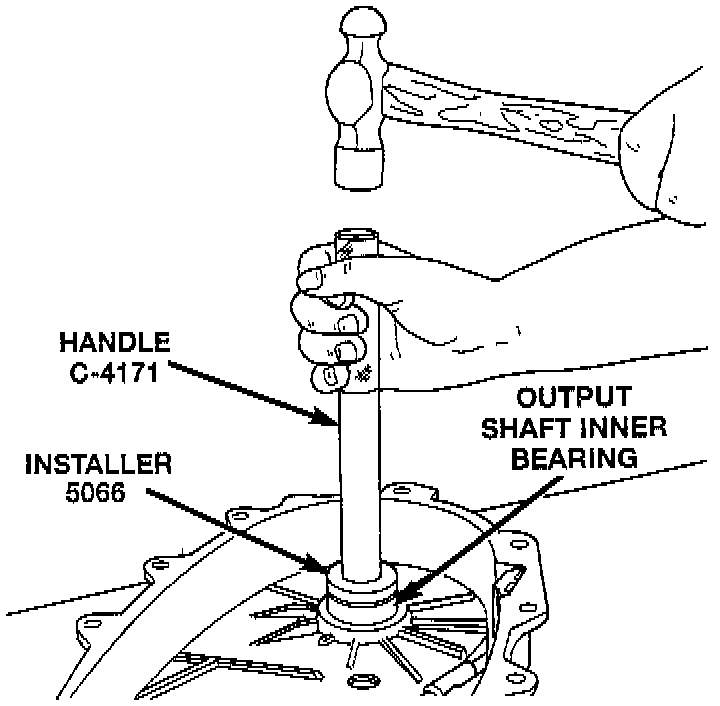
13. Install new bearing with Tool Handle C-4171 and Installer 5066, or equivalents. Lubricate bearing after installation.
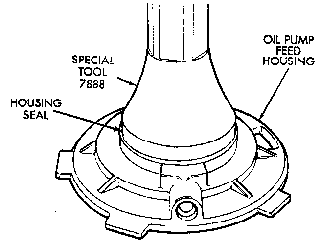
14. Install new seal in oil pump feed housing with Special Tool 7888, or equivalents.
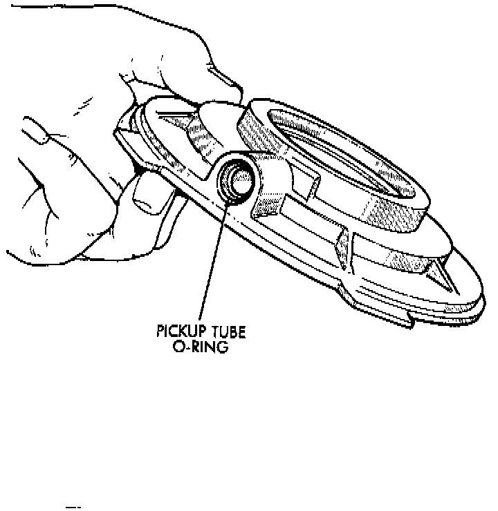
15. Install new pickup tube O-ring in oil pump.